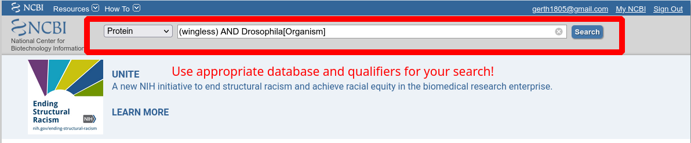
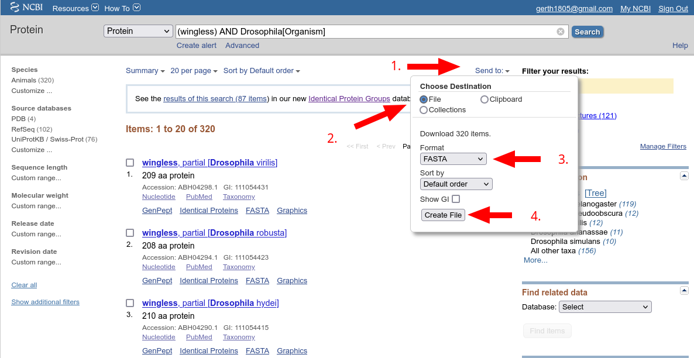
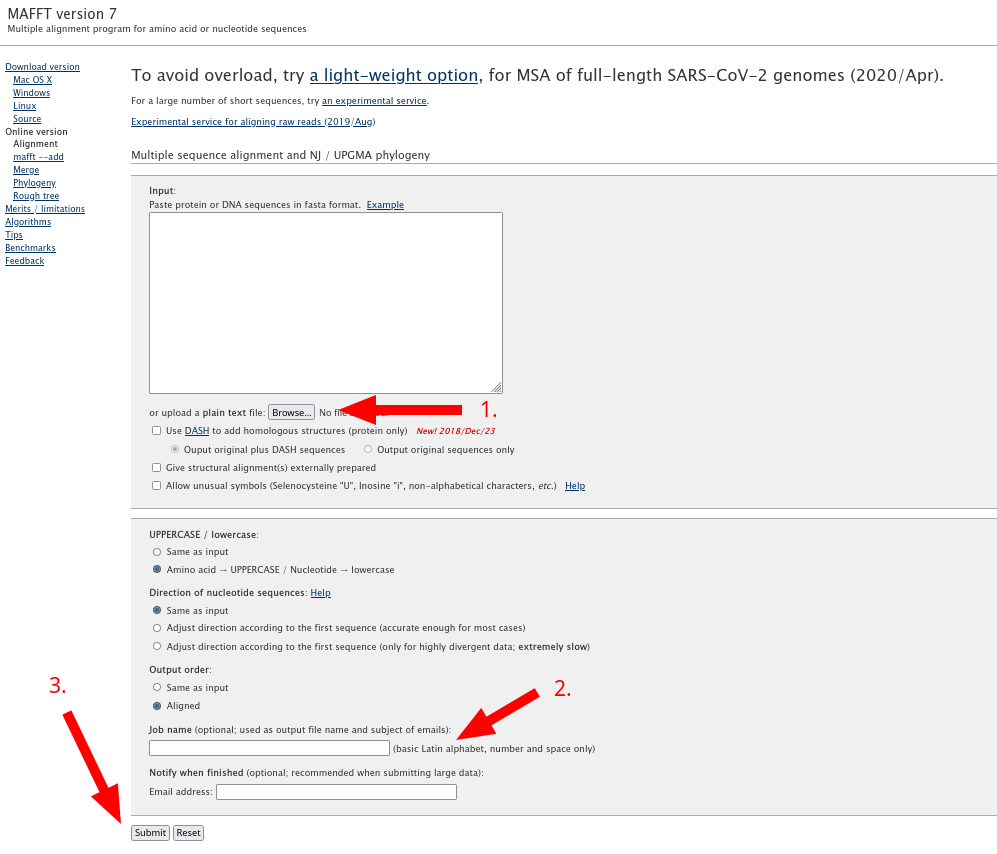
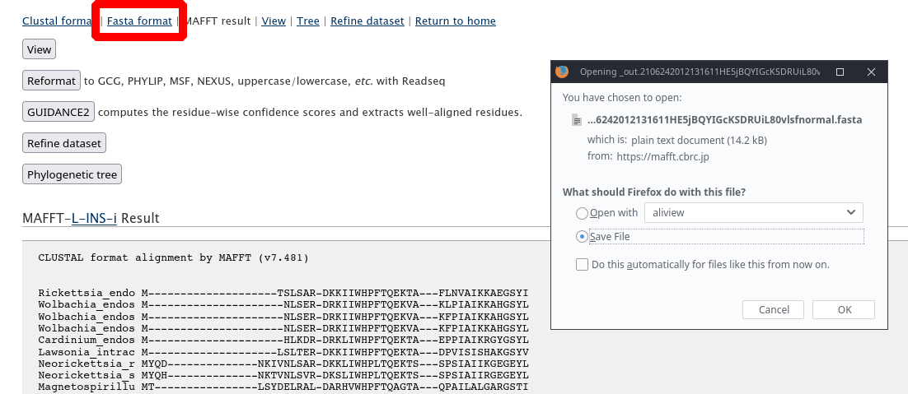
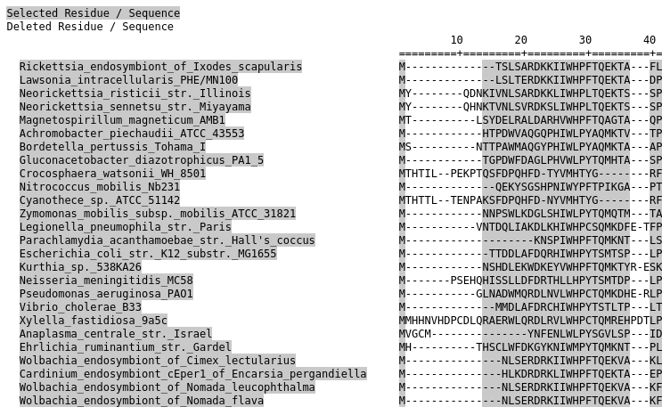

Retrieving and aligning sequences
This course script is intended as a guide through the practical parts of the course, and as a starting point and reference for your future phylogenetics endeavours. It will cover the usage of the tools that will be introduced to you which together form a very basic phylogenetic workflow.
Please note that this workflow may or may not be appropriate for your particular data / questions. For each of the tools presented here, there are various alternatives that may better suit your needs. The course and this script will only explain very basic examples – please make sure to consult the documentations for more advanced examples.
Compiling data
You usually already have a question in mind before you start you phylogenetic analysis. The choice of phylogenetic markers strongly depends on your question: in general you want to use fast evolving markers to resolve recent evolutionary events, and slow evolving markers for ancient evolutionary events. A good starting point for marker selection is the literature: likely someone has already worked on a similar type of question and has identified markers that are potentially useful for you. If your interest is protein evolution you would of course use the protein sequences of interest directly.
Phylogenies can in principle be reconstructed from many different types of data. In this course, we will focus on DNA and amino acid (AA) sequences. Once you have decided on a marker, you will need to compile your sequences. A good starting point for this is NCBI (National Center for Biotechnology Information) which hosts a massive database of protein and nucleotide sequences.. You will find almost any protein or nucleotide sequence ever published in these databases. The search function is powerful and supports boolean operators (Fig. 1). In case you have accession numbers of your sequences of interest (e.g., from a publication), use the Batch Entrez feature of NCBI. Simply upload a list of accession numbers and NCBI will retrieve the entries, which you can then download (Fig. 2).
At this point you will need to decide in which format to store your sequence data in. Frustratingly, there is a plethora of file formats, and some pieces of software only support a particular file format. My recommendation is to use the fasta file format for AA and nucleotide sequences and alignments, and to convert this if needed (e.g., using the excellent online tool ALTER). The fasta file format has the big advantage of being very easily readable by human and machines and follows the following format:
>Sequence_A TAGTAGCGATCGACTAAGCTAGCT >Sequence_B CGACTAAGCTAGCTTAGTAGCGATDescriptions (usually your sequence names) always start with a
>and should provide a unique identifier for your sequences. The sequences may or may not contain line breaks:>Sequence_A TAGTAGCGATCG ACTAAGCTAGCT >Sequence_B CGACTAAGCTAG CTTAGTAGCGATIMPORTANT: Never use white spaces in fasta decription lines. This will inevitably lead to problems in downstream applications. You can use any text editor to replace white spaces e.g., with underscores by using the search & replace function.

Send to; 2. select File; 3. select FASTA; 4. click Create file to download.Aligning sequences
We will use the Mafft online server to align our sequences. Upload your fasta file, and let Mafft decide on the optimal alignment strategy (this is the default behaviour; Fig. 3). For more specific applications you may want to check out the other alignment options.

Submit to start alignmentWhen the alignment is done, download the fasta file (Fig. 4) and give it a meaningful name.

Using an alignment editor
You should always visually check your alignments to make sure that everything looks as expected. Remember, your hypothesis for any aligned position is that all of the characters are homologous. Alignment viewers make it easy to view and manipulate your alignment files. We will use Aliview, a fast and versatile alignment viewer (Fig. 5). It can be started by double-clicking the corresponding file.

Automated alignment trimming
In many cases, you will want to trim your alignment to exclude positions that you consider unreliably aligned or positions that contain mostly gaps. This can be done manually in Aliview as we have seen above. However, for a more reproducible workflow it is recommendable to automate this task using clearly defined criteria. We will use trimAl for automated alignment trimming. This programme (as most phylogenetics software) does not have a graphical user interface (GUI), so most be used via the command line. No worries, this is not as difficult as it may seem.
To run trimAl, navigate to your trimAl executable and type
trimal -in /home/gerth/Documents/PCC/data/bioA_edit.fas -out /home/gerth/Documents/PCC/data/bioA_trim.fas -htmlout /home/gerth/Documents/PCC/data/bioA_trim.html -gt .5Let’s go through this command step by step: trimal is our executable. -in specifies the input file. Note that we have to specify the entire path of the file unless the file is in the same directory as the executable. -out is the name of the output file. Again, we are using the entire path here. -htmlout soecifies the path to a useful html file that displays the trimmed characters. -gt .5 specifies how trimming should be performed: we are asking to remove any position in the alignment that has a gap in more than 50% of all sequences. This is only one of multiple trimming criteria trimAl can employ, make sure to have a look at the other ones as well.
Let’s have a look at the html output file trimAl has generated for us (Fig. 6). We can see that the trimming has worked as expected, and we could now check the alignment again in Aliview before moving on.
